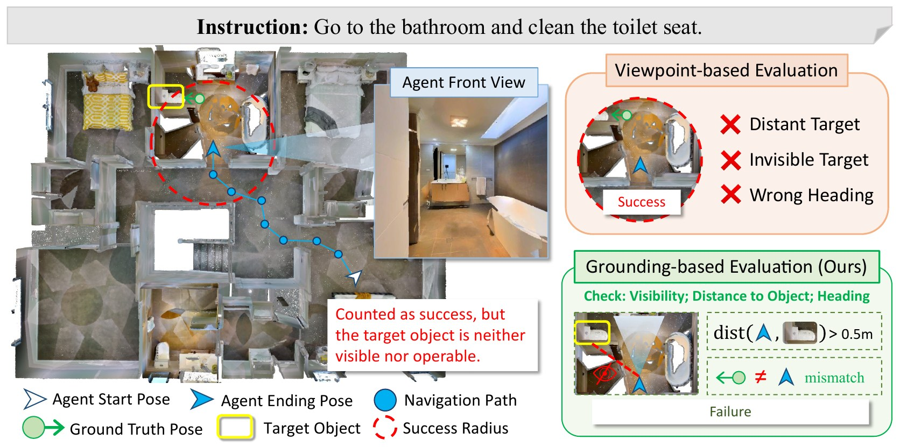

REALM: Region-to-Entity Alignment for Last-3-Meter Navigation

Figure 1. Existing VLN evaluation rewards stopping near a target viewpoint, but object grounding requires a final viewpoint where the referred object is actually visible and localizable.
Vision-and-Language Navigation (VLN) agents may satisfy conventional success criteria while still failing to establish reliable object-level grounding, because current evaluation protocols mainly reward stopping within a 3-meter radius and largely ignore the agent’s final orientation and target visibility. We formalize this limitation as the Last-3-Meter Grounding Gap and introduce three instance-centric metrics to quantify proximity precision, target visibility, and final-view grounding. To mitigate this gap, we propose REALM (Region-to-Entity Alignment for Last-3-Meter Navigation), a plug-and-play, architecture-agnostic refinement module that decouples fine-grained target approaching from long-horizon navigation. REALM uses a visibility-aware stopping strategy to reduce premature termination and improve final viewpoint alignment. We further construct REVERIE-AIM, which provides object-instance-level goals and 180K short-horizon training samples for final-stage target approaching. Evaluations across four diverse VLN backbones show that REALM consistently improves proximity precision and visual grounding success, suggesting its potential applicability.
On REVERIE and REVERIE-CE, an episode counts as a success if the agent stops within 3 m of a pre-annotated waypoint. That waypoint sits near the object, not at it, and the agent’s final heading is never checked. An agent can therefore “succeed” while facing a wall, with the referred object nowhere in view. Try it below.
Drag the sliders. Inside the red region the episode already counts as a success under the standard 3 m rule, yet the toilet seat is often too far, too small, behind a wall, or behind the agent. A schematic re-creation of Figure 1: SR uses geodesic distance to the annotated endpoint; OracleGS requires the target to be in view, unoccluded, and ≥ 1% of the frame (area estimated from distance).
ETPNav-FT on REVERIE-AIM val-unseen: more than 80% of its “successes” fail to actually reach the target instance.
Geodesic distance from the stop position to the navigable points around the specific target instance is at most τ. We report τ = 0.1 m and 0.5 m.
The ground-truth box of the target is visible in the final camera frame and covers at least 1% of the image.
The detector’s predicted box at the final viewpoint matches the ground truth with IoU ≥ 0.5. Comparing GS with OracleGS separates navigation errors from detection errors.
REALM is a decoupled refinement stage. Long-horizon navigation (path planning over tens of meters) and short-horizon target approach (precise visual alignment within a few meters) are different problems, so REALM takes over only after the upstream VLN policy issues stop. It uses only egocentric RGB and the original instruction, with no depth, maps, or changes to the upstream model.
An upstream policy (graph-based, video-based, or zero-shot) follows the instruction and stops near the target region.
UniNaVid-7B fine-tuned with LoRA predicts the next four low-level actions from the RGB video and instruction, trained with a visibility-aware stop penalty.
A BERT-QA extractor distils the instruction into a short target phrase (e.g. “flowers on the table”), which queries OWLv2 for the bounding box.
Trained with imitation learning alone, the refinement policy tends to stop too early, often before the target has even come into view. Once it stops, the episode is over and there is no chance to recover.
VSP adds a training penalty that targets exactly this mistake. Whenever the model is inclined to stop while the target is still not visible, it is penalized, and the more confidently it wants to stop, the larger the penalty. When the target is visible, stopping is not penalized at all. The agent therefore keeps searching and adjusting its viewpoint until it can actually see the object, and is still free to stop as soon as it does.
We remap REVERIE into the Habitat continuous simulator and replace region-level waypoints with object-instance goals from ObjectNav annotations. From the training split we further sample a dense short-horizon set for learning the final approach: starting points are perturbed around the target (truncated Gaussian, σ = 1.5 m) with random initial headings.
REVERIE-AIM is the first embodied navigation dataset that combines continuous space, language goals, instance-level targets, and object-proximity endpoints.
REALM plugged into four different VLN backbones on REVERIE-AIM val-unseen. Pick a backbone to compare the upstream stopping point (no refinement) with REALM.
20 episodes on a Hello Robot Stretch 3 (RealSense D435if RGB-D, inference on an RTX 4090) across a robot lab, a school lobby, and a foyer.
| Method | ONS@0.5m ↑ | GS ↑ | OracleGS ↑ |
|---|---|---|---|
| UniNaVid | 10.00 | 5.00 | 15.00 |
| UniNaVid + REALM | 35.00 | 20.00 | 25.00 |
Stretch 3. “Turn left and grab the red hat on the chair next to the entrance.” UniNaVid stops near the target but the hat is not in view; REALM searches around and approaches until it is grounded. (2× speed)
Humanoid. “Go straight forward and grab the red box on the chair.” Demonstrates the navigation behaviour on a second embodiment. (1× speed)
@inproceedings{shi2026realm,
title = {From Region Arrival to Instance-Level Grounding in Vision-and-Language Navigation},
author = {Shi, Xiangyu and Yang, Ruoxi and Tao, Wei and Zhang, Jiwen and Qiao, Yanyuan and Wu, Qi},
booktitle = {Conference on Robot Learning (CoRL)},
year = {2026}
}